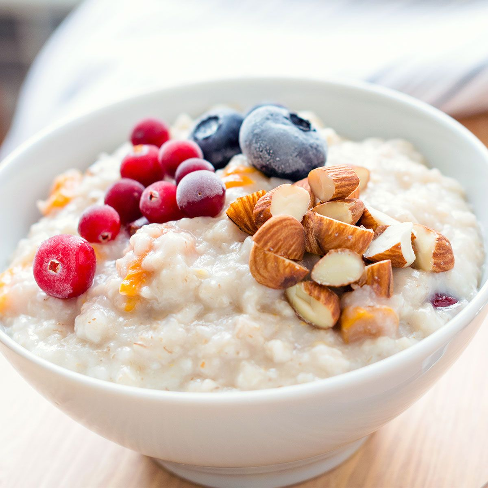
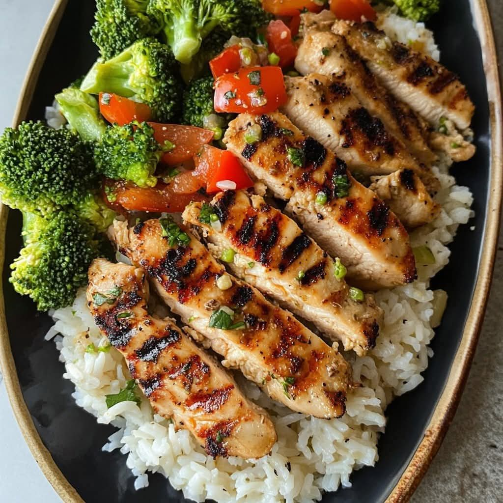
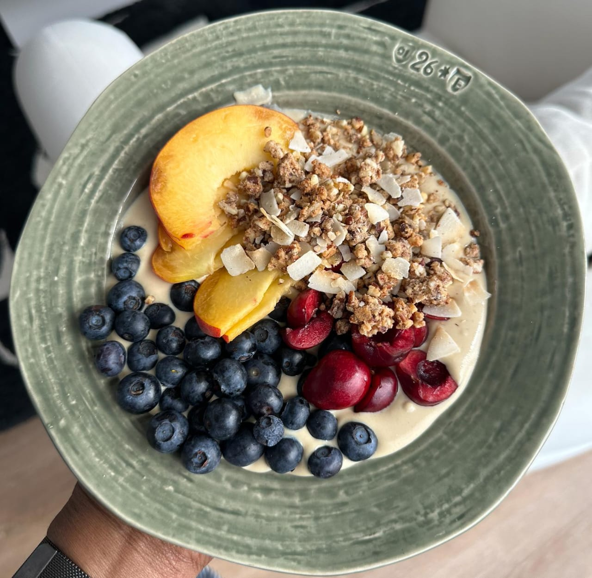
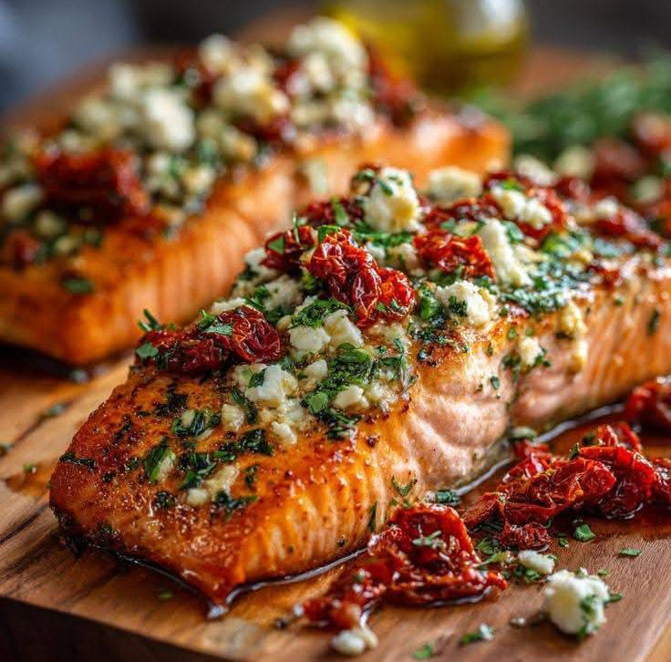

Kickstart your metabolism with 3 egg whites, a bowl of oats with honey, and a handful of almonds. This provides long-lasting energy and essential proteins.

Grilled chicken breast (200g) with brown rice and a large serving of steamed broccoli. This meal is perfect for muscle recovery and steady glucose levels.

A Greek yogurt bowl with mixed berries and a scoop of whey protein or a protein bar. Ideal for keeping the hunger away until dinner.

Baked fish (Salmon/Tilapia) with a side salad of spinach, cucumber, and olive oil dressing. Low carbs at night help in fat loss.